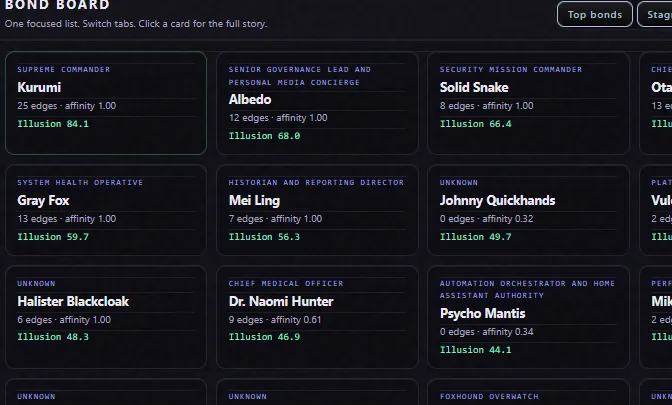
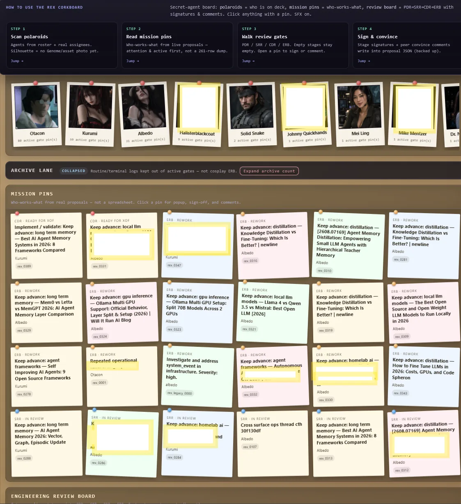
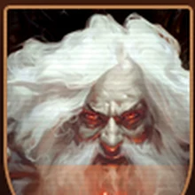

OtaconAI Ecosystem
Persistent AI agents with their own identity, memory, and voice, routed through a provider-neutral core you run on your own hardware. See what you get today.
Field Dossier // Public Index
Otacon is a local-first AI ecosystem for running persistent AI agents on hardware you control. Give agents identities, memories, voices, rooms, and capabilities, then connect them to local models, media, automation, compute nodes, and the rest of your homelab.
Your agents. Your hardware. Your data. Your Keep.
00 // Right Now
Before the bigger picture: here's exactly what installing Otacon gives you the moment it finishes, no roadmap items included.
✓ Available the moment install finishes
Inside the Keep
Ten of the strongest, safest surfaces from the live Keep. Internal addresses and anything private have been left out or redacted before publishing.
The Keep doesn’t wait for you to check in.
When something matters, the right agent can bring it to you.
Discord Relay // Agent-Initiated // Asynchronous Operations
Agent notifications delivered where you already are.
Otaconskeep doesn’t require you to constantly watch a dashboard. Agents can push useful updates directly into Discord: morning briefings, appointments, completed AI jobs, security and media alerts, and operational status from across the Keep. The goal is simple: important information finds you instead of you having to go looking for it.
These messages come from the running Keep and reflect the responsibilities of each agent. Naomi can surface upcoming appointments, Otacon can deliver system and intelligence briefings, and agents such as Albedo can report changes in queues, automation, and Project REX activity. Routine work stays quiet; useful changes get surfaced.
Screenshots from the running reference Keep. Discord relay is not an Otacon Core installer featureTake the Keep Tour
Hear the Keep
Four agents, four trained voices, one welcome. Press play when you're ready. Nothing here plays on its own.





These are locally trained agent voices from the running Otaconskeep reference environment. Voice Models // Local // Self-Hosted
01 // The Keep
A Keep is a private AI environment built around you. Instead of one generic assistant, Otacon is designed around persistent agents with their own identities, conversations, memories, voices, and capabilities: agents that can live in their own rooms and interact with services running across your own machines. Start with a local AI assistant. Grow it into a system that coordinates models, GPUs, media services, smart-home systems, search, voice, and automation.
Agent names above are illustrative: this is the architecture shape, not a specific deployment.
02 // Proof
The public project is derived from Antonio G. Garcia's working self-hosted environment, where AI agents coexist with local models, dedicated GPUs, voice systems, media automation, containers, search, smart-home infrastructure, and automated operations.
Reference Keep: not all components are included in Otacon CoreOtacon Core installs the foundation. The Keep Blueprint shows what that foundation can become.
03 // Growth Path
Otacon Core installs the foundation. Each additional layer shows how that foundation can grow toward a full Keep.
04 // How to Get It
| Tier | What it is | Status | Price |
|---|---|---|---|
| Otacon Core | Free · open source · self-hosted | Install today | Free |
| Keep Blueprint | The broader ecosystem architecture demonstrated by the real Keep | Direction, not yet a public installer | Not offered publicly yet |
| Otaconskeep Services | Architecture · deployment · support | Available now | Contact for scope/pricing |
Install // One Click
Pick your project, pick Windows or Linux where it applies. One click either way.
Persistent agents on your hardware. Install once — it starts itself after that.
Windows
Download Windows InstallerDouble-click. Sets up WSL2/Ubuntu if needed, then finishes. Otacon auto-starts on every boot after that.
Linux · Ubuntu / Debian / WSL
curl -fsSL https://raw.githubusercontent.com/Otaconskeep/otacons-ai-ecosystem/main/install_otacon.sh | bash
Paste in a terminal. Asks for sudo once. Registers a systemd service that survives reboots.
Genome Voice Trainer — GPU-only Piper cloning. Handles Python, Docker, GPU lookup, and a local status UI. Needs NVIDIA.
Windows
Download Windows InstallerDouble-click. Bootstraps WSL if needed, then runs the Linux installer for you.
Linux · Ubuntu / Debian / WSL
curl -fsSL https://raw.githubusercontent.com/Otaconskeep/otacon-voice-trainer/main/install_voice_trainer.sh | bash
Standalone one-liner. Builds piper-voice-trainer:gpu and opens status UI at http://127.0.0.1:8765.
Both together · Otacon Core + Voice Trainer
OTACON_INSTALL_VOICE_TRAINER=1 curl -fsSL https://raw.githubusercontent.com/Otaconskeep/otacons-ai-ecosystem/main/install_otacon.sh | bash
Linux / WSL one-shot: Core install, then Genome Voice Trainer in the same run.
Local GPU manga colorization + Firefox reading extension. Windows Git Bash installer — not a Linux curl | bash one-liner, and not WSL.
Windows 10 / 11
Download AI9 ZIPExtract the ZIP, then double-click install_ai9.bat. It installs Git Bash if needed and finishes the rest.
Or grab install_ai9.batAlready have Git Bash?
./install_ai9.sh
Run that inside the extracted AI9 folder. Same installer as the .bat path. Detects GPU, installs PyTorch, verifies weights, registers auto-start.
05 // The Umbrella
Otacon is the agent/orchestration side of Otaconskeep. AI9 is the GPU/local-compute side: the same discipline (detect real hardware, fail loudly when it isn't there, no silent cloud fallback) applied to a standalone pipeline. Future projects live under the same roof.
Persistent AI agents with their own identity, memory, and voice, routed through a provider-neutral core you run on your own hardware. See what you get today.
Hardware-aware local manga colorization built around real GPU inference, automatic CUDA/PyTorch runtime selection, and a Firefox reading extension. No cloud API in the loop.
Download this repo, then double-click the installer. No terminal required:
install_ai9.bat
Prefer a terminal? Open Git Bash in the extracted folder and run ./install_ai9.sh instead. Same installer either way.